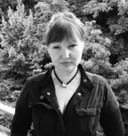

- 2009.
- 2010.
- 2011.
- 2012.
- 2013.
15 червня 2013 TEDxKyiv. Інстинкт майбутнього.
-
 ТемаЩастя працювати безкоштовно
ТемаЩастя працювати безкоштовно
Ярослав Заблоцкий
-
 ТемаКто готовит детей к будущему? Семья, школа или робот?
ТемаКто готовит детей к будущему? Семья, школа или робот?
Оксана Стоєцька
-
 ТемаЗміна простору чи свідомості - що стане першим?
ТемаЗміна простору чи свідомості - що стане першим?
Володимир Колинько
-
 Тема
Тема
Максим Прасолов
-
 ТемаВід швидкого успіху в долину смерті
ТемаВід швидкого успіху в долину смерті
Юнона Лотоцька
-
 ТемаСовременная библиотека - больше чем книги
ТемаСовременная библиотека - больше чем книги
Альона Плакіда
-
 ТемаАматорська астрономія як національна ідея
ТемаАматорська астрономія як національна ідея
Юрій Іващенко
-
ТемаЕсли жизнь - движение, управляйте здоровьем как автомобилем
Олег Терн
-
 ТемаКіборги, що будують сучасне місто (підкорена матриця)
ТемаКіборги, що будують сучасне місто (підкорена матриця)
Дмитро Карамшук
-
 ТемаЧему мы можем научиться у собственной животной природы
ТемаЧему мы можем научиться у собственной животной природы
Дмитро Шабанов
-
ТемаНам нужны романтики в бизнесе
Дмитро Костiк
-
 ТемаЭкономика заслуг - общественный договор без денег
ТемаЭкономика заслуг - общественный договор без денег
Руслан Абдікеєв
-
 ТемаOpen-source and non-profit space travel
ТемаOpen-source and non-profit space travel
Пітер Медсен
-
 ТемаБоль, кальций - с чем бороться?
ТемаБоль, кальций - с чем бороться?
Нана Войтенко
-
 Тема3D, гаражи и Вы сами
Тема3D, гаражи и Вы сами
Hackerspace
-
 ТемаНаши глаза как зеркало компьютерной графики
ТемаНаши глаза как зеркало компьютерной графики
Сергій Ципцин
-
 ТемаЧто я узнал, рисуя под водой картины
ТемаЧто я узнал, рисуя под водой картины
Олександр Білозор
-

ТемаМи настільки вільні, скільки часу в нас є
Ганка Третяк